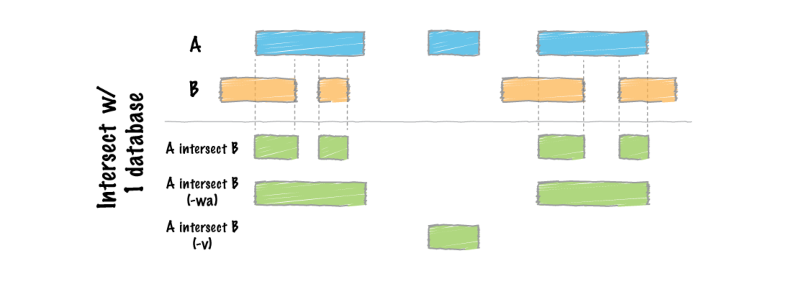

In this workshop we are going to align our ChIP-seq reads to the yeast reference genomes for Saccharomyces cerevisiae and Schizosaccharomyces pombe. There are many tools available for mapping reads each with their own purposes and strengths. We will be using MiniMap2.
In order to calibrate this data we need to map it four times, twice each to sacCer3 and Pombe. The initial mapping steps is in order to isolate reads which do not map to a given genome, the second mapping then maps these unmapped reads to the other genome. This gives us reads mapping only to each genome and filters out reads which would map to both.
https://www.ncbi.nlm.nih.gov/pmc/articles/PMC4787748/
For the purpose of this workshop we are just going to run through one half of this process (the other half being identical except for which genomes are used). We will however run the entire pipeline later so that we can perform the calibration.
For simplicity we will run a single sample through the step-by-step mapping process but when we run the full pipeline we will run multiple samples simultaneously.
First, we need to select a reference genome to align to. Every time a reference genome is released or updated it is given a new name, often referred to as the genome build or assembly (..hg18, hg19, hg38). It is important to realise that different builds of the same genome are different sequences and thus their co-ordinate sytsems are incompatable. For instance position 10000000 on chr1 is T in hg19 and G in hg38.
We are going to map our reads to the latest release of the yeast genome sacCer3, as well as ASM294v2.22 for pombe.
These are on the server under;
/homes/genomes/s.cerevisiae/sacCer3/sacCer3.fa
/homes/genomes/s.pombe/ASM294v2.22/ASM294v2.22.fa
First we will align our trimmed Fastq reads to the Pombe (calibration) genome
### First mapping to **Calibration** Genome
mkdir mm2_out
# Map trimmed reads to calibration genome with Minimap2 (paired end)
minimap2 -ax sr /homes/genomes/s.pombe/ASM294v2.22/ASM294v2.22.fa fastq/WT_IP_R1.trimmed.fastq.gz fastq/WT_IP_R2.trimmed.fastq.gz > mm2_out/WT_IP.calibration.mm2.sam(sr = short genomic paired-end reads)
This should only take a few minutes…
The standard output for most mapping software is SAM (sequence alignment/map format). SAM files contain many columns that describe the position of each alignment as well as information on the quality of the alignment, mismatches, the number of times a read mapped, mapping of paired ends and other custom flags and statistics. SAM files can be very large so there are compressed alternatives BAM and CRAM. The samtools package has many useful tools for viewing and manipulating files in SAM format. We will use some of these below.
Take a look at the SAM format specification and the first few lines of your SAM output using samtools:
samtools view mm2_out/WT_IP.calibration.mm2.sam | less The second column is the SAM flag and contains coded information about each alignment. Use the Explain SAM flags resource to find out more about the alignments in your file.
We can also see the samtools header using the -h flag which contains information on the parameters and indexes used to create the file.
samtools view -h mm2_out/WT_IP.calibration.mm2.sam | lessHere, we are using samtools to output only unmapped reads (flag=4), while converting the SAM file into BAM, this is a binary format to save disk space.
# SAM to BAM (keep unmapped reads only)
samtools view -Sbh -f 4 mm2_out/WT_IP.calibration.mm2.sam -o mm2_out/WT_IP.calibration.mm2.unmapped.bamThis step converts our unmapped BAM file into a new fastq file (which we will map soon), note both reads are interleaved into one file.
# interleaved (keep in single fastq)
samtools bam2fq mm2_out/WT_IP.calibration.mm2.unmapped.bam > mm2_out/WT_IP.calibration.mm2.unmapped.fastqHere we are simply compressing the file.
gzip mm2_out/WT_IP.calibration.mm2.unmapped.fastqTake a look at the contents of the output directory now. The -lh flag prints out a directory in list view with human readable file sizes.
ls -lh mm2_out/* Notice the difference in size between the SAM and BAM files
The next step involves mapping the reads which did not map to the pombe (calibration genome) to our experimental genome (sacCer3).
# Map unmapped calibration genome to experimental genome with Minimap2 (interleaved)
# input mm2_out/WT_IP.calibration.mm2.unmapped.fastq
minimap2 -ax sr /homes/genomes/s.cerevisiae/sacCer3/sacCer3.fa mm2_out/WT_IP.calibration.mm2.unmapped.fastq.gz > mm2_out/WT_IP.experimental.only.mm2.samAs before, we are using samtools to convert our SAM to BAM, this time we are only keeping the mapped reads.
# SAM to BAM to sort (mapped reads only)
samtools view -Sbh -F 260 -f 3 mm2_out/WT_IP.experimental.only.mm2.sam -o mm2_out/WT_IP.experimental.only.mm2.bam-F 260 = remove unmapped reads and secondary alignments -f 3 = only retain properly paired reads
We are also sorting the BAM file as this is required by certain tools downstream.
samtools sort -@ 5 mm2_out/WT_IP.experimental.only.mm2.bam -o mm2_out/WT_IP.experimental.only.mm2.sorted.bamThe sorted BAM file can also be indexed (.bai file) to allow quick programmatic access for visualisation and processing.
samtools index mm2_out/WT_IP.experimental.only.mm2.sorted.bamLet’s look at the BAM files using samtools idxstats to see where our reads align
samtools idxstats mm2_out/WT_IP.experimental.only.mm2.sorted.bamThe third column represents the number of alignments to each chromosome.
Samtools flagstat tells us mapping values across the whole genome, this will be useful for normalization and calibration so we will save the output to file.
samtools flagstat mm2_out/WT_IP.experimental.only.mm2.sorted.bam > mm2_out/WT_IP.experimental.only.mm2.bam.fsThe ENCODE project produced 100s of NGS datasets and found that certain regions of the genome were consistently prone to overinflated read depths regardless of the sample or preparation. Some of these are repeats of variable copy number, others are likely to be similar to repeat regions in unsequenced portions of the genome (telomeres, centromeres, satellites etc.). These are typically seen as large towers of reads that dominate your read profiles. It is probably a good idea to remove these regions from downstream analyses or remove the reads that align all together. ENCODE subsequently released genome blacklists for human and mouse, for other species you can identify these regions by eye.
BedTools is an extremely useful tool suite for performing operations on genomic intervals and alignments and comparing multiple datasets. The intersect tool can find overlaps between reads in a BAM file -abam and blacklist regions in a bed file -b and output all the reads that DON’T intersect -v.

In some cases you may also want to remove ribosomal RNA/DNA reads that make up a bulk of your sample.
This is true with our data mapped to sacCer3, we can see a lot of reads mapping to an repetitive region on chromosome 12, rDNA.bed contains the coordinates for this over saturated area.
# Remove rDNA regions (chrXII saturated with reads)
bedtools intersect -v -abam mm2_out/WT_IP.experimental.only.mm2.sorted.bam -b /homes/genomes/training/calibration_workshop/rDNA.bed > mm2_out/WT_IP.experimental.only.mm2.rDNA.bam
Let’s index and create a flagstat file for our new filtered bam file.
samtools index mm2_out/WT_IP.experimental.only.mm2.rDNA.bamsamtools flagstat mm2_out/WT_IP.experimental.only.mm2.rDNA.bam > mm2_out/WT_IP.experimental.only.mm2.rDNA.bam.fs